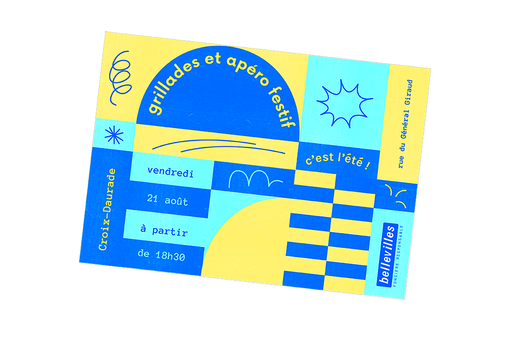
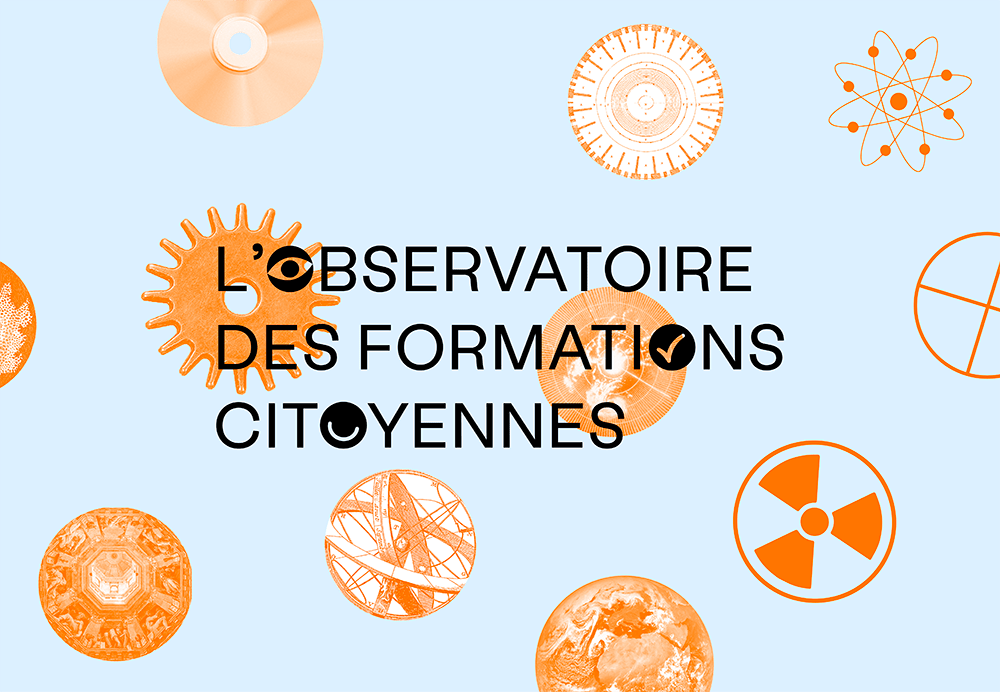
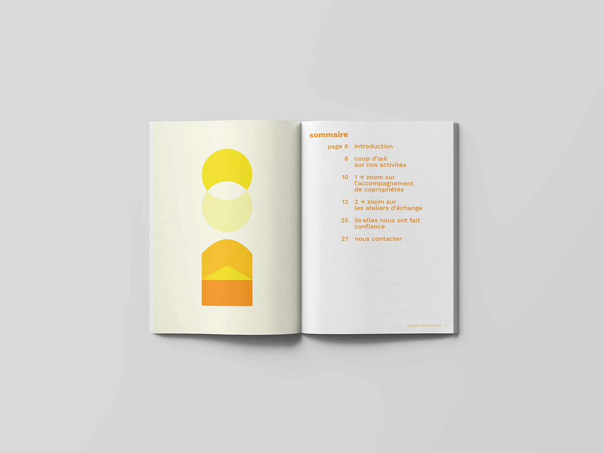
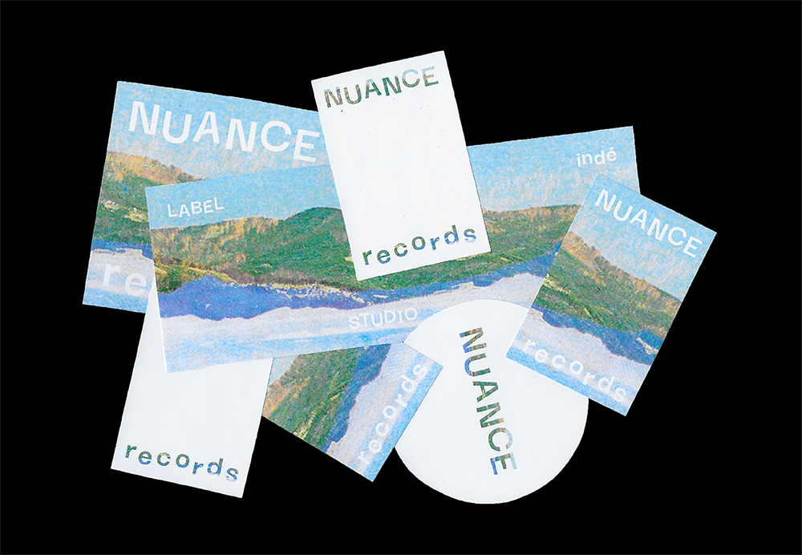
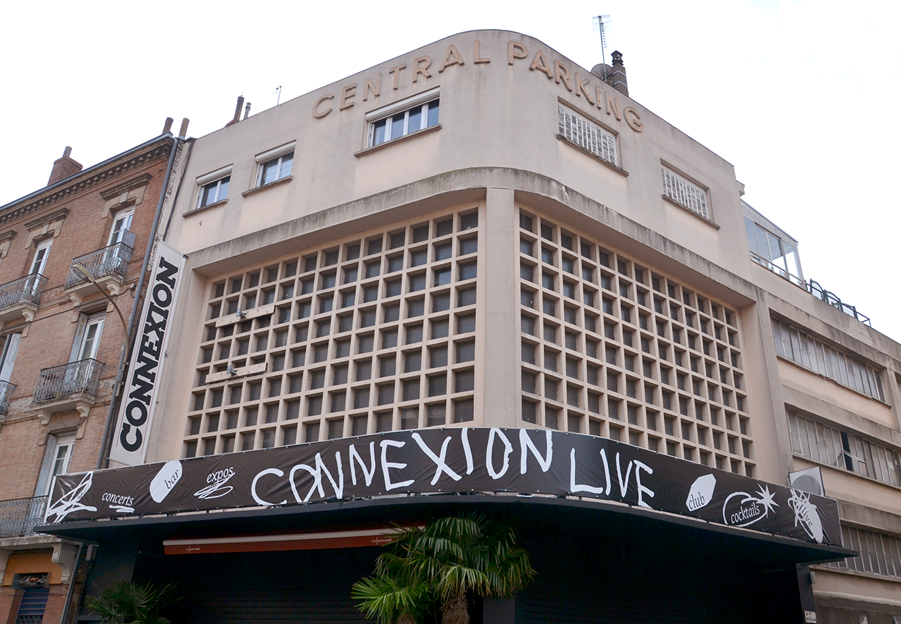
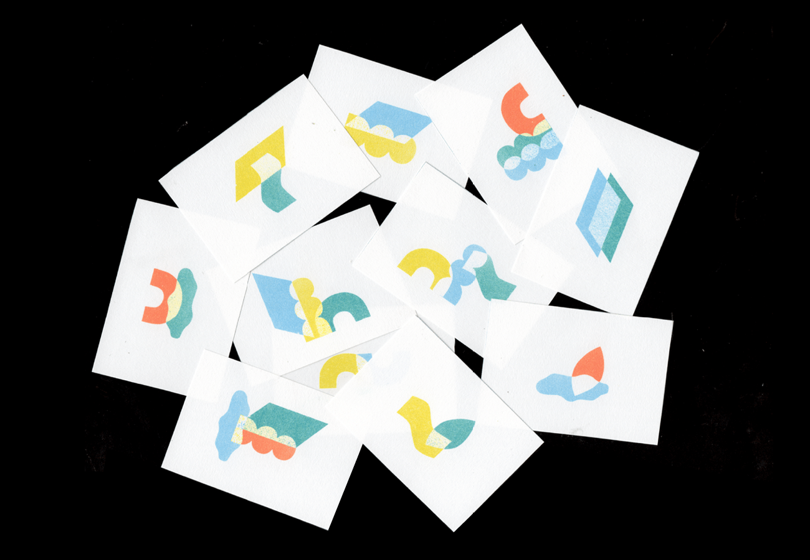

⤷ Journal de Deuil

⤷ Variations Obscures

⤷ le Clos Jacquin

⤷ Antoine Maréchal

⤷ Jard'In Zur

⤷ l'Observatoire des Formations Citoyennes

⤷ l’Échappée des Copropriétés

⤷ Nuances Records

⤷ la Ville en Jeux
⤷ Cinema Makers

⤷ Connexion Live

⤷ la Villa en Chantier

⤷ Coudasse

⤷ l'UniverCité

⤷ la Forêt Électrique

⤷ la Ferme de la Mhotte

⤷ MeMO